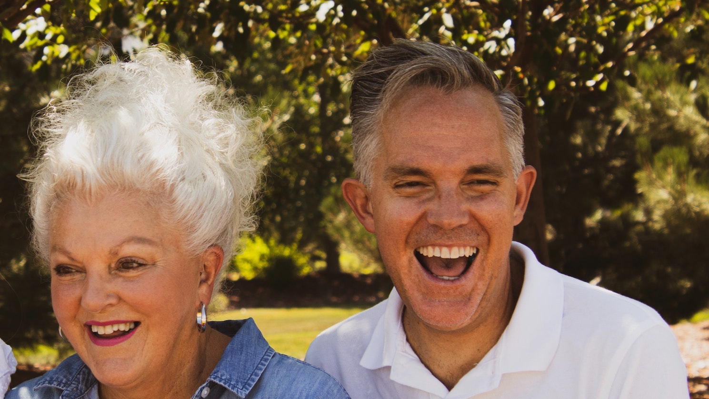

Kedron Wavell Club
-
What is Kedron Wavell Club?
Kedron Wavell Club is a community focused non-profit organisation that runs many events for people and community. It's named club, but not for young people, it is suitable for retired people. They have restaurants, TAB machines, free fitness sessions, and many weekly/monthly events are run by the organisation. Open everyday from morning till midnight, and always busy with many visitors.
 -
Restaurants & Cafes
If you are looking for a place to have lunch with your friends, this place may be a perfect choice. For usual lunch and dinner meeting with your friends, "the kitchen" is the good choice. They are Australian restaurant that serves Steaks, Burgers, Pasta, Pizzas etc. This restaurant also has Kid's meal so you are also welcomed to bring your grandkids and enjoy the family gathering. At the Gallipoli Loungd, you can view a live sport and also the TAB machines are available.
-
Free events
Kedron Wavell Club is a community focused place. They organise some events day by day and you can join them with your friends! The event can be free fitness session, BINGO game, Live Music, and so on!
-
Where is it?
It's only 1 minute away from Chermside Westfield Shopping Center, and plenty car park slots are available.
21 Kittyhawk Drive, Chermside QLD 4032